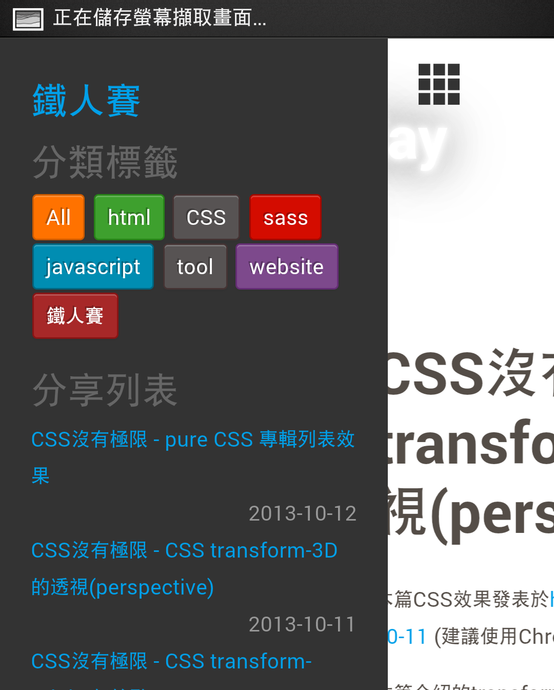

本篇CSS效果發表於http://ashareaday.wcc.tw/#2013-10-13 (建議使用Chrome瀏覽器)
這篇要介紹的是noscript的CSS3自適應選單，用的技巧也是先前所介紹的那些，而今天的篇幅看似很長，請別擔心，都只是範例圖而已...。而下面的範例圖就是今天的目標。
 Android,Htc one,Browser:Chrome參考來源: http://valdelama.com/static/demo/responav/css-only/index.html
本站已經有實作此效果，範例就是此網站。這個效果只要是利用checkbox配合~的selector，並且利用transform的translateX位移調整，所以此效果必須是支援以上屬性的瀏覽器才能正常顯示。
//Html <input type="checkbox" id="menuSlider"> <div class="fixed-nav"> <label for="menuSlider" class="menubtn lsf">tilemenu</label> //這是固定的導行列，控制checkbox的label也是在這。 ... </div> <div class="container"> <aside id="leftmenu" class="aside"> </aside> //主選單 <div class="main-content"> </div> //主要內容 ... </div>
//Sass
html,body
width: 100%
height: 100%
//這兩個屬性都要設定100%
.aside
height: 100% //頂天
width: 70% //展開時所要的寬度
position: fixed //固定位置
overflow-y: auto //如果選單太長就會有bar
left: 0 //靠左
top: 0 //靠上
z-index: 10 //放在最頂層
+transform(translateX(-100%)) //先向左位移100%，藏在可視範圍外
+transition(all .5s) //動畫般的推移效果
.main-content
+transition(all .5s) //主要的內容也想要有動畫般的推移
#menu-slider:checked //就是那一個checkbox被選取時
& ~ //在他被選取時，與他同層級的後方...
.container
.aside
+transform(translateX(0%))
//.aside從可是範圍外被調整回原本的位置
.main-content
+transform(translateX(70%))
//主要內容被向右推移70%的距離
由於全部的程式碼過於攏長，所以在此重要的屬性設定的原因及觀念，如果想要實作練習，建議可以參考剛剛所提供的相關連結。
:checked的效果，把左邊的選單拉出來，並且將主要的內容向右推移。android的內建browser就不行囉...。